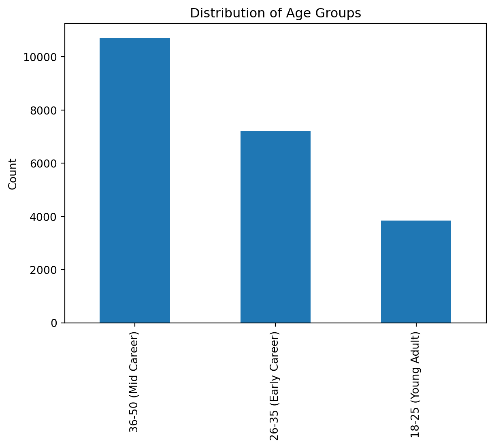
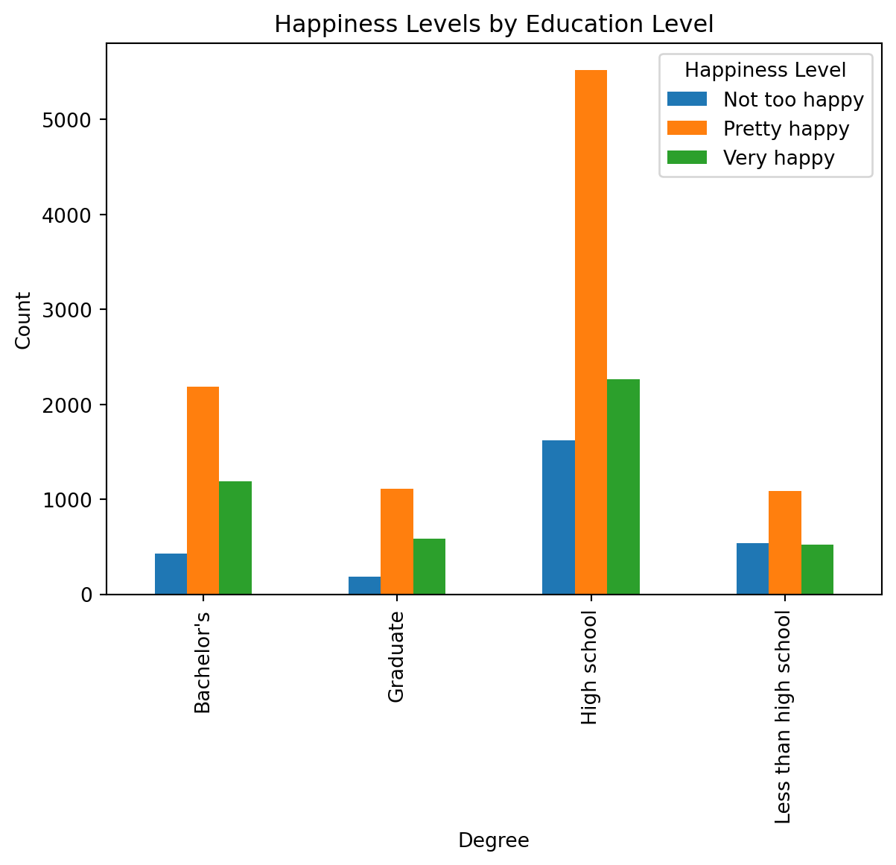
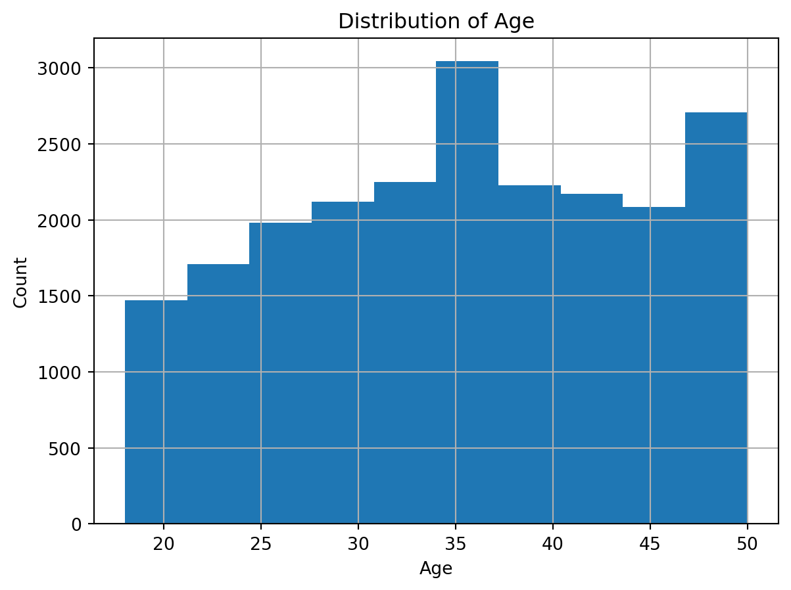
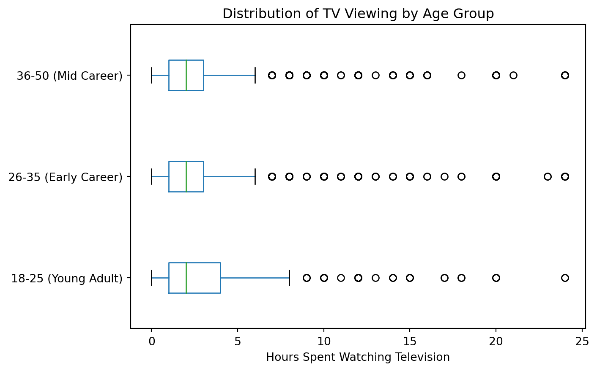
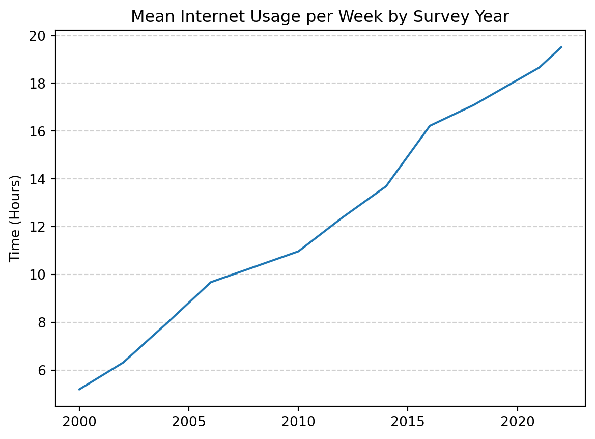
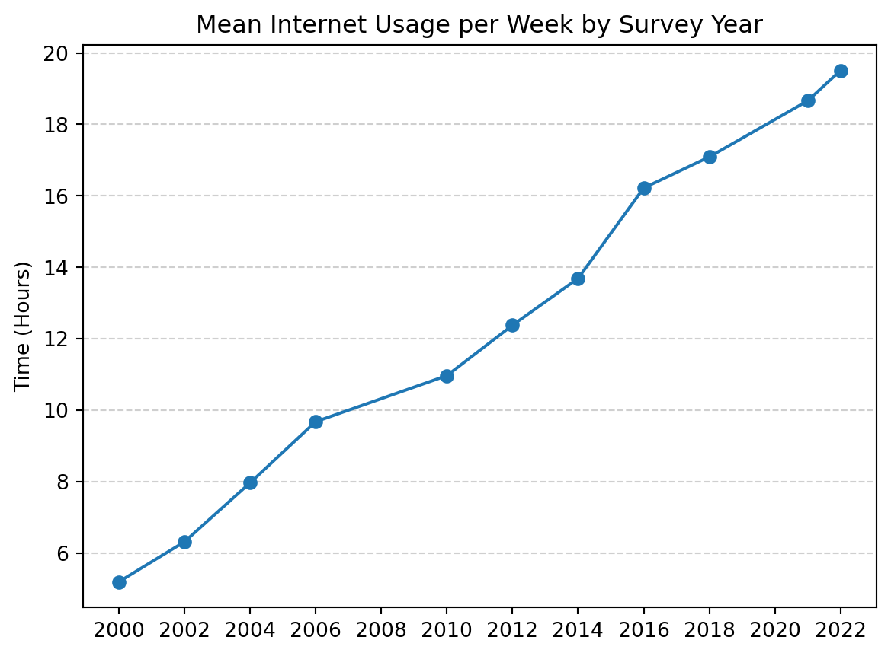
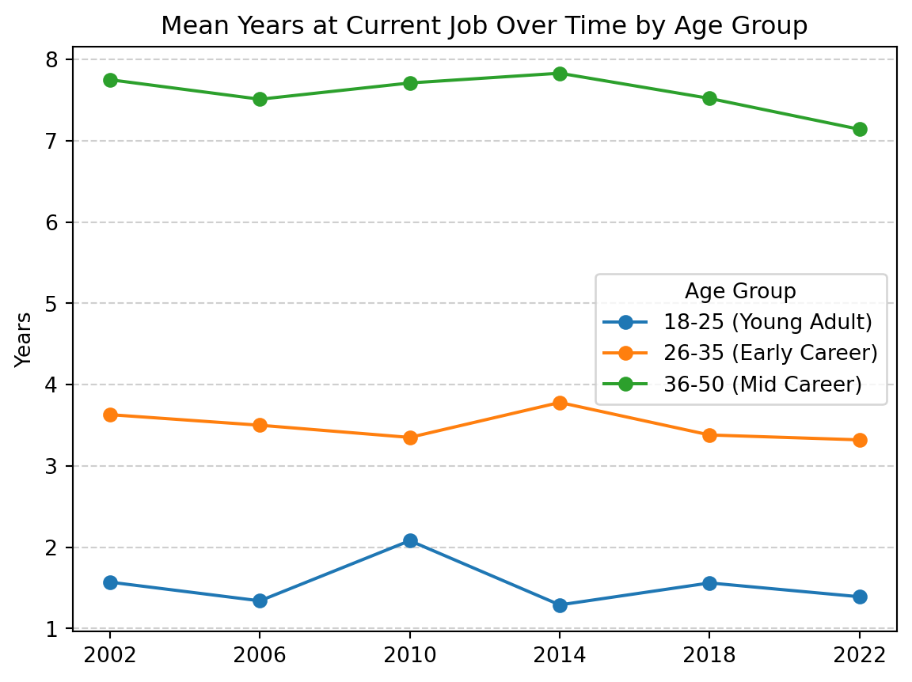

x = 10
x10Python variables are created by assignment. A valid Python variable name must start with a letter or an underscore, use only letters, numbers, and underscores, and can’t be a reserved Python keyword.
Syntax
variable_name = valueExample
x = 10
x10[ ])Lists store ordered collections of values. Items are accessed by index, starting at 0.
Syntax
my_list = [item1, item2, item3]
my_list[index]Example
letters = ["A", "B", "C", "D", "E"]
print(letters[0])
print(letters[1])
print(letters[2])
print(letters[3])
print(letters[4])A
B
C
D
E:)Slices select a range of values from a list. The ending index is not included.
Syntax
my_list[start:end]
my_list[:end]
my_list[start:]Example
print(letters[0:3])
print(letters[:3])['A', 'B', 'C']
['A', 'B', 'C']Example
print(letters[-3:])['C', 'D', 'E'][:3] and [:3] both mean items at index positions 0–2[-3:] means the last three items{ })Dictionaries store key–value pairs. Values are accessed using keys.
Syntax
my_dict = {key1: value1, key2: value2}
my_dict[key1]
my_dict[key2]Example (string keys)
print(exchange_rates)
print(exchange_rates["EUR"])
print(exchange_rates["JPY"])
print(exchange_rates["GBP"]){'EUR': 0.92, 'JPY': 148.5, 'GBP': 0.79}
0.92
148.5
0.79Example (numeric keys)
print(phase_changes)
print(phase_changes[-1])
print(phase_changes[0])
print(phase_changes[100]){-1: 'Below freezing', 0: 'Freezing point of water', 100: 'Boiling point of water'}
Below freezing
Freezing point of water
Boiling point of waterprint()The print() function displays output.
Syntax
print(value)Example
print("Hello!")
print(x)Hello!
10len()The len() function returns the number of items in a collection.
Syntax
len(collection)Example
print(letters)
print(len(letters))['A', 'B', 'C', 'D', 'E']
5set()A set stores only unique values.
Syntax
set(collection)Example
grade = ["9th grade",
"10th grade",
"11th grade",
"12th grade",
"9th grade",
"10th grade",
"11th grade",
"12th grade",
"11th grade",
"10th grade"]
set(grade){'10th grade', '11th grade', '12th grade', '9th grade'}set()
Use set() to identify distinct values in a list.
forA for loop repeats an action for each item in a collection.
Syntax
for item in collection:
print(item)Example
for item in letters[-3:]:
print(item)C
D
Ewith open()This pattern reads a file from a url and automatically closes it when finished.
Syntax
import urllib.request as u
base_url = "https://example.com/data/"
filename = "file.txt"
url = base_url + filename
with u.urlopen(url) as file:
for line in file:
newline = line.decode("utf-8").strip()
my_list.append(newline)Example
import urllib.request as u
base_url = "https://raw.githubusercontent.com/ds4e-org/ap-cs-dsc/main/data/"
filename = "education.txt"
url = base_url + filename
education = []
with u.urlopen(url) as file:
for line in file:
newline = line.decode("utf-8").strip()
education.append(newline)
education[:10]['11th grade',
'4 years of college',
'4 years of college',
'3 years of college',
'5 years of college',
'11th grade',
'12th grade',
'12th grade',
'6 years of college',
'6 years of college']Methods are functions that belong to an object and are called using dot notation.
.strip()Removes extra whitespace (such as spaces or "\n") from the beginning and end of a string.
Syntax
string.strip()Example
text = " hello\n"
clean = text.strip()
print(clean)hello.strip() matters
Text files often contain invisible characters such as "\n" at the end of each line. .strip() removes leading and trailing whitespace from strings.
.append()The .append() method adds one item to the end of a list.
Syntax
my_list.append(value)Example
print(letters)
letters.append("F")
print(letters)['A', 'B', 'C', 'D', 'E']
['A', 'B', 'C', 'D', 'E', 'F']Pandas is a Python library used for working with tabular data.
import pandas as pdimport pandas as pd loads the Pandas library.
Syntax
import pandas as pdExample
import pandas as pdas pd creates a shortcut (alias).pd is the standard alias for pandas.pd.read_csv()Reads a CSV file and stores it as a DataFrame.
Syntax
dataframe_name = pd.read_csv("file_path.csv")Example
gss = pd.read_csv("data/updated_gss.csv")pandas DataFrame named gss.DataFrameDataFrame is a two-dimensional data structure with rows (observations) and columns (variables)..head()Displays the first 5 rows of a DataFrame.
Syntax
dataframe.head()Example
gss.head()| id | birth_year | survey_year | age | age_group | sex | reg16 | region | born | parborn | ... | natenvir | happy | happy7 | hapunhap | goodlife | opclout | ophrdwrk | opknow | opwlth | opeduc | |
|---|---|---|---|---|---|---|---|---|---|---|---|---|---|---|---|---|---|---|---|---|---|
| 0 | 1 | 1955 | 1987 | 32 | 26-35 (Early Career) | MALE | Northeast | Northeast | YES | Both born in the U.S. | ... | TOO LITTLE | Pretty happy | .i: Inapplicable | .i: Inapplicable | Disagree | Not very important | Fairly important | Not very important | Fairly important | Fairly important |
| 1 | 2 | 1950 | 1987 | 37 | 36-50 (Mid Career) | FEMALE | Midwest | Northeast | YES | Both born in the U.S. | ... | .i: Inapplicable | Pretty happy | .i: Inapplicable | .i: Inapplicable | Disagree | Not very important | Fairly important | Fairly important | Fairly important | Very important |
| 2 | 5 | 1957 | 1987 | 30 | 26-35 (Early Career) | MALE | Northeast | Northeast | YES | Both born in the U.S. | ... | .i: Inapplicable | Not too happy | .i: Inapplicable | .i: Inapplicable | Disagree | Very important | Essential | Very important | Essential | Very important |
| 3 | 6 | 1955 | 1987 | 32 | 26-35 (Early Career) | MALE | Northeast | Northeast | YES | Neither born in the U.S. | ... | TOO LITTLE | Pretty happy | .i: Inapplicable | .i: Inapplicable | Agree | Not very important | Very important | Fairly important | Fairly important | Fairly important |
| 4 | 7 | 1958 | 1987 | 29 | 26-35 (Early Career) | FEMALE | Northeast | Northeast | YES | Both born in the U.S. | ... | .i: Inapplicable | Not too happy | .i: Inapplicable | .i: Inapplicable | Agree | Very important | Essential | Fairly important | Essential | Essential |
5 rows × 45 columns
.info()Displays structural information about a DataFrame.
Syntax
dataframe.info()Example
gss.info()<class 'pandas.core.frame.DataFrame'>
RangeIndex: 21758 entries, 0 to 21757
Data columns (total 45 columns):
# Column Non-Null Count Dtype
--- ------ -------------- -----
0 id 21758 non-null int64
1 birth_year 21758 non-null int64
2 survey_year 21758 non-null int64
3 age 21758 non-null int64
4 age_group 21758 non-null object
5 sex 21758 non-null object
6 reg16 21758 non-null object
7 region 21758 non-null object
8 born 21758 non-null object
9 parborn 21758 non-null object
10 granborn 21758 non-null object
11 wrkstat 21758 non-null object
12 yearsjob 6346 non-null float64
13 moredays 6267 non-null float64
14 hrsrelax 6294 non-null float64
15 wwwhr 10504 non-null float64
16 tvhours 11849 non-null float64
17 hsbio 21758 non-null object
18 hschem 21758 non-null object
19 hsmath 21758 non-null object
20 hsphys 21758 non-null object
21 dipged 21758 non-null object
22 educ 21758 non-null object
23 degree 21758 non-null object
24 coldeg1 21758 non-null object
25 majorcol 21758 non-null object
26 colsci 21758 non-null object
27 whencol 21758 non-null object
28 voedcol 21758 non-null object
29 paeduc 21758 non-null object
30 maeduc 21758 non-null object
31 padeg 21758 non-null object
32 madeg 21758 non-null object
33 coneduc 21758 non-null object
34 nateduc 21758 non-null object
35 natenvir 21758 non-null object
36 happy 21758 non-null object
37 happy7 21758 non-null object
38 hapunhap 21758 non-null object
39 goodlife 21758 non-null object
40 opclout 21758 non-null object
41 ophrdwrk 21758 non-null object
42 opknow 21758 non-null object
43 opwlth 21758 non-null object
44 opeduc 21758 non-null object
dtypes: float64(5), int64(4), object(36)
memory usage: 7.5+ MB.sort_values()Sorts the rows of a DataFrame based on the values in a specified column.
Syntax
dataframe.sort_values(by="column_name")Example (Ascending Order)
gss.sort_values(by="age")| id | birth_year | survey_year | age | age_group | sex | reg16 | region | born | parborn | ... | natenvir | happy | happy7 | hapunhap | goodlife | opclout | ophrdwrk | opknow | opwlth | opeduc | |
|---|---|---|---|---|---|---|---|---|---|---|---|---|---|---|---|---|---|---|---|---|---|
| 15125 | 2238 | 1998 | 2016 | 18 | 18-25 (Young Adult) | MALE | South | South | YES | Both born in the U.S. | ... | TOO LITTLE | Not too happy | .i: Inapplicable | .i: Inapplicable | Agree | .i: Inapplicable | .i: Inapplicable | .i: Inapplicable | .i: Inapplicable | .i: Inapplicable |
| 6599 | 216 | 1988 | 2006 | 18 | 18-25 (Young Adult) | MALE | Foreign | West | .i: Inapplicable | .i: Inapplicable | ... | .i: Inapplicable | .i: Inapplicable | .i: Inapplicable | .i: Inapplicable | .i: Inapplicable | .i: Inapplicable | .i: Inapplicable | .i: Inapplicable | .i: Inapplicable | .i: Inapplicable |
| 20279 | 288 | 2005 | 2024 | 18 | 18-25 (Young Adult) | FEMALE | West | West | YES | Both born in the U.S. | ... | TOO LITTLE | Very happy | .y: Not available in this year | .y: Not available in this year | Strongly agree | .y: Not available in this year | .y: Not available in this year | .y: Not available in this year | .y: Not available in this year | .y: Not available in this year |
| 10487 | 211 | 1992 | 2010 | 18 | 18-25 (Young Adult) | FEMALE | Midwest | Midwest | YES | Neither born in the U.S. | ... | TOO LITTLE | Pretty happy | .i: Inapplicable | .i: Inapplicable | Agree | .i: Inapplicable | .i: Inapplicable | .i: Inapplicable | .i: Inapplicable | .i: Inapplicable |
| 21475 | 2676 | 2006 | 2024 | 18 | 18-25 (Young Adult) | MALE | Midwest | Midwest | YES | Both born in the U.S. | ... | .i: Inapplicable | Pretty happy | .y: Not available in this year | .y: Not available in this year | Disagree | .y: Not available in this year | .y: Not available in this year | .y: Not available in this year | .y: Not available in this year | .y: Not available in this year |
| ... | ... | ... | ... | ... | ... | ... | ... | ... | ... | ... | ... | ... | ... | ... | ... | ... | ... | ... | ... | ... | ... |
| 9773 | 978 | 1958 | 2008 | 50 | 36-50 (Mid Career) | FEMALE | Midwest | Midwest | YES | Both born in the U.S. | ... | .i: Inapplicable | Pretty happy | .i: Inapplicable | Fairly happy | Agree | .i: Inapplicable | .i: Inapplicable | .i: Inapplicable | .i: Inapplicable | .i: Inapplicable |
| 2573 | 2107 | 1950 | 2000 | 50 | 36-50 (Mid Career) | MALE | South | South | YES | Both born in the U.S. | ... | TOO LITTLE | Pretty happy | .i: Inapplicable | .i: Inapplicable | Disagree | .i: Inapplicable | .i: Inapplicable | .i: Inapplicable | .i: Inapplicable | .i: Inapplicable |
| 3353 | 568 | 1952 | 2002 | 50 | 36-50 (Mid Career) | FEMALE | Northeast | Northeast | YES | Both born in the U.S. | ... | .i: Inapplicable | Not too happy | .i: Inapplicable | .i: Inapplicable | .i: Inapplicable | .i: Inapplicable | .i: Inapplicable | .i: Inapplicable | .i: Inapplicable | .i: Inapplicable |
| 11501 | 6 | 1962 | 2012 | 50 | 36-50 (Mid Career) | FEMALE | Northeast | Northeast | YES | Both born in the U.S. | ... | TOO LITTLE | Very happy | FAIRLY HAPPY | .i: Inapplicable | .i: Inapplicable | .i: Inapplicable | .i: Inapplicable | .i: Inapplicable | .i: Inapplicable | .i: Inapplicable |
| 13864 | 2375 | 1964 | 2014 | 50 | 36-50 (Mid Career) | MALE | Midwest | Midwest | YES | Both born in the U.S. | ... | .i: Inapplicable | Very happy | .i: Inapplicable | .i: Inapplicable | Agree | .i: Inapplicable | .i: Inapplicable | .i: Inapplicable | .i: Inapplicable | .i: Inapplicable |
21758 rows × 45 columns
Example (Descending Order)
gss.sort_values(by="age", ascending=False)| id | birth_year | survey_year | age | age_group | sex | reg16 | region | born | parborn | ... | natenvir | happy | happy7 | hapunhap | goodlife | opclout | ophrdwrk | opknow | opwlth | opeduc | |
|---|---|---|---|---|---|---|---|---|---|---|---|---|---|---|---|---|---|---|---|---|---|
| 10049 | 1443 | 1958 | 2008 | 50 | 36-50 (Mid Career) | FEMALE | Foreign | West | NO | Neither born in the U.S. | ... | TOO MUCH | Very happy | .i: Inapplicable | Fairly happy | Agree | .i: Inapplicable | .i: Inapplicable | .i: Inapplicable | .i: Inapplicable | .i: Inapplicable |
| 13222 | 1155 | 1964 | 2014 | 50 | 36-50 (Mid Career) | FEMALE | Northeast | Northeast | YES | Both born in the U.S. | ... | TOO LITTLE | Not too happy | .i: Inapplicable | .i: Inapplicable | .i: Inapplicable | .i: Inapplicable | .i: Inapplicable | .i: Inapplicable | .i: Inapplicable | .i: Inapplicable |
| 18134 | 3840 | 1971 | 2021 | 50 | 36-50 (Mid Career) | MALE | South | South | YES | Both born in the U.S. | ... | .i: Inapplicable | Pretty happy | .i: Inapplicable | .i: Inapplicable | Agree | Very important | Essential | Very important | Fairly important | Essential |
| 14789 | 1513 | 1966 | 2016 | 50 | 36-50 (Mid Career) | FEMALE | Northeast | Northeast | YES | Both born in the U.S. | ... | .i: Inapplicable | Pretty happy | .i: Inapplicable | .i: Inapplicable | Agree | .i: Inapplicable | .i: Inapplicable | .i: Inapplicable | .i: Inapplicable | .i: Inapplicable |
| 14787 | 1510 | 1966 | 2016 | 50 | 36-50 (Mid Career) | FEMALE | Northeast | Northeast | YES | Both born in the U.S. | ... | ABOUT RIGHT | Very happy | .i: Inapplicable | .i: Inapplicable | Agree | .i: Inapplicable | .i: Inapplicable | .i: Inapplicable | .i: Inapplicable | .i: Inapplicable |
| ... | ... | ... | ... | ... | ... | ... | ... | ... | ... | ... | ... | ... | ... | ... | ... | ... | ... | ... | ... | ... | ... |
| 5000 | 450 | 1986 | 2004 | 18 | 18-25 (Young Adult) | FEMALE | Northeast | Northeast | YES | Both born in the U.S. | ... | TOO LITTLE | .i: Inapplicable | .i: Inapplicable | .i: Inapplicable | .i: Inapplicable | .i: Inapplicable | .i: Inapplicable | .i: Inapplicable | .i: Inapplicable | .i: Inapplicable |
| 7969 | 2445 | 1988 | 2006 | 18 | 18-25 (Young Adult) | MALE | South | South | YES | Both born in the U.S. | ... | .i: Inapplicable | Pretty happy | .i: Inapplicable | .i: Inapplicable | Agree | .i: Inapplicable | .i: Inapplicable | .i: Inapplicable | .i: Inapplicable | .i: Inapplicable |
| 21467 | 2660 | 2005 | 2024 | 18 | 18-25 (Young Adult) | FEMALE | Midwest | Midwest | YES | Both born in the U.S. | ... | .i: Inapplicable | Pretty happy | .y: Not available in this year | .y: Not available in this year | .i: Inapplicable | .y: Not available in this year | .y: Not available in this year | .y: Not available in this year | .y: Not available in this year | .y: Not available in this year |
| 5753 | 1607 | 1986 | 2004 | 18 | 18-25 (Young Adult) | FEMALE | South | South | YES | Neither born in the U.S. | ... | .i: Inapplicable | Very happy | .i: Inapplicable | .i: Inapplicable | .i: Inapplicable | .i: Inapplicable | .i: Inapplicable | .i: Inapplicable | .i: Inapplicable | .i: Inapplicable |
| 21392 | 2507 | 2005 | 2024 | 18 | 18-25 (Young Adult) | FEMALE | South | South | YES | Both born in the U.S. | ... | .i: Inapplicable | Pretty happy | .y: Not available in this year | .y: Not available in this year | .i: Inapplicable | .y: Not available in this year | .y: Not available in this year | .y: Not available in this year | .y: Not available in this year | .y: Not available in this year |
21758 rows × 45 columns
By default, Pandas shows only the first 5 and last 5 rows when a DataFrame is displayed, .
[ ]Use bracket notation to select a single column from a DataFrame.
Syntax
dataframe["column_name"]Example
gss["age"]0 32
1 37
2 30
3 32
4 29
..
21753 45
21754 46
21755 27
21756 24
21757 39
Name: age, Length: 21758, dtype: int64By default, Pandas shows only the first 5 and last 5 values of a selected column.
.loc[ ]Select rows and columns using labels.
Syntax
dataframe.loc[row_condition, "column_name"]Example
gss.loc[gss["age"] > 40, "degree"]7 High school
9 Less than high school
11 High school
21 High school
29 Bachelor's
...
21747 Graduate
21748 High school
21749 Less than high school
21753 High school
21754 High school
Name: degree, Length: 6962, dtype: object.iloc[ ]Select rows and columns using index positions.
Syntax
dataframe.iloc[row_index, column_index]Example
gss.iloc[0:5, 0:3]| id | birth_year | survey_year | |
|---|---|---|---|
| 0 | 1 | 1955 | 1987 |
| 1 | 2 | 1950 | 1987 |
| 2 | 5 | 1957 | 1987 |
| 3 | 6 | 1955 | 1987 |
| 4 | 7 | 1958 | 1987 |
Rows in a DataFrame can be filtered using comparison conditions.
| Operator | Meaning |
|---|---|
== |
Equal to |
!= |
Not equal |
> |
Greater than |
< |
Less than |
>= |
Greater than or equal |
<= |
Less than or equal |
Syntax
dataframe[dataframe["column_name"] comparison expression]Example
gss[gss["age"] > 40]| id | birth_year | survey_year | age | age_group | sex | reg16 | region | born | parborn | ... | natenvir | happy | happy7 | hapunhap | goodlife | opclout | ophrdwrk | opknow | opwlth | opeduc | |
|---|---|---|---|---|---|---|---|---|---|---|---|---|---|---|---|---|---|---|---|---|---|
| 7 | 12 | 1944 | 1987 | 43 | 36-50 (Mid Career) | FEMALE | Foreign | Northeast | NO | Both born in the U.S. | ... | .i: Inapplicable | .n: No answer | .i: Inapplicable | .i: Inapplicable | .i: Inapplicable | .i: Inapplicable | .i: Inapplicable | .i: Inapplicable | .i: Inapplicable | .i: Inapplicable |
| 9 | 14 | 1942 | 1987 | 45 | 36-50 (Mid Career) | MALE | Foreign | Northeast | NO | Neither born in the U.S. | ... | .i: Inapplicable | Very happy | .i: Inapplicable | .i: Inapplicable | .i: Inapplicable | .i: Inapplicable | .i: Inapplicable | .i: Inapplicable | .i: Inapplicable | .i: Inapplicable |
| 11 | 16 | 1944 | 1987 | 43 | 36-50 (Mid Career) | MALE | Foreign | Northeast | NO | Neither born in the U.S. | ... | .i: Inapplicable | Pretty happy | .i: Inapplicable | .i: Inapplicable | Neither | Not very important | Very important | Fairly important | Very important | Essential |
| 21 | 28 | 1945 | 1987 | 42 | 36-50 (Mid Career) | MALE | Northeast | Northeast | YES | Both born in the U.S. | ... | .i: Inapplicable | Not too happy | .i: Inapplicable | .i: Inapplicable | Agree | Not important at all | Very important | Fairly important | Fairly important | Essential |
| 29 | 40 | 1940 | 1987 | 47 | 36-50 (Mid Career) | MALE | Northeast | Northeast | YES | Both born in the U.S. | ... | .i: Inapplicable | Pretty happy | .i: Inapplicable | .i: Inapplicable | Agree | Not important at all | Fairly important | Not important at all | Not important at all | Very important |
| ... | ... | ... | ... | ... | ... | ... | ... | ... | ... | ... | ... | ... | ... | ... | ... | ... | ... | ... | ... | ... | ... |
| 21747 | 3263 | 1976 | 2024 | 48 | 36-50 (Mid Career) | MALE | South | South | YES | Both born in the U.S. | ... | .i: Inapplicable | Pretty happy | .y: Not available in this year | .y: Not available in this year | .i: Inapplicable | .y: Not available in this year | .y: Not available in this year | .y: Not available in this year | .y: Not available in this year | .y: Not available in this year |
| 21748 | 3270 | 1980 | 2024 | 44 | 36-50 (Mid Career) | FEMALE | Northeast | Northeast | YES | Both born in the U.S. | ... | TOO LITTLE | Not too happy | .y: Not available in this year | .y: Not available in this year | Disagree | .y: Not available in this year | .y: Not available in this year | .y: Not available in this year | .y: Not available in this year | .y: Not available in this year |
| 21749 | 3273 | 1975 | 2024 | 48 | 36-50 (Mid Career) | MALE | Northeast | Northeast | NO | Neither born in the U.S. | ... | .i: Inapplicable | Pretty happy | .y: Not available in this year | .y: Not available in this year | Agree | .y: Not available in this year | .y: Not available in this year | .y: Not available in this year | .y: Not available in this year | .y: Not available in this year |
| 21753 | 3293 | 1978 | 2024 | 45 | 36-50 (Mid Career) | MALE | Northeast | Northeast | YES | Both born in the U.S. | ... | .i: Inapplicable | Pretty happy | .y: Not available in this year | .y: Not available in this year | Disagree | .y: Not available in this year | .y: Not available in this year | .y: Not available in this year | .y: Not available in this year | .y: Not available in this year |
| 21754 | 3296 | 1977 | 2024 | 46 | 36-50 (Mid Career) | MALE | Northeast | Northeast | YES | Both born in the U.S. | ... | .i: Inapplicable | Very happy | .y: Not available in this year | .y: Not available in this year | Strongly disagree | .y: Not available in this year | .y: Not available in this year | .y: Not available in this year | .y: Not available in this year | .y: Not available in this year |
6962 rows × 45 columns
Rows from a DataFrame can be filtered using multiple conditions.
| Operator | Meaning |
|---|---|
& |
AND (both conditions must be true) |
| |
OR (at least one condition is true) |
Syntax
dataframe[(condition1) & (condition2)]
dataframe[(condition1) | (condition2)]Example
gss[(gss["tvhours"] > 15) & (gss["happy"] == "Very happy")]| id | birth_year | survey_year | age | age_group | sex | reg16 | region | born | parborn | ... | natenvir | happy | happy7 | hapunhap | goodlife | opclout | ophrdwrk | opknow | opwlth | opeduc | |
|---|---|---|---|---|---|---|---|---|---|---|---|---|---|---|---|---|---|---|---|---|---|
| 6167 | 2280 | 1979 | 2004 | 25 | 18-25 (Young Adult) | FEMALE | South | South | YES | Both born in the U.S. | ... | .i: Inapplicable | Very happy | .i: Inapplicable | .i: Inapplicable | .i: Inapplicable | .i: Inapplicable | .i: Inapplicable | .i: Inapplicable | .i: Inapplicable | .i: Inapplicable |
| 9526 | 546 | 1964 | 2008 | 44 | 36-50 (Mid Career) | FEMALE | South | South | YES | Both born in the U.S. | ... | .i: Inapplicable | Very happy | .i: Inapplicable | .i: Inapplicable | .i: Inapplicable | .i: Inapplicable | .i: Inapplicable | .i: Inapplicable | .i: Inapplicable | .i: Inapplicable |
| 9695 | 832 | 1958 | 2008 | 50 | 36-50 (Mid Career) | FEMALE | South | Northeast | YES | Both born in the U.S. | ... | TOO LITTLE | Very happy | .i: Inapplicable | Very happy | Strongly agree | .i: Inapplicable | .i: Inapplicable | .i: Inapplicable | .i: Inapplicable | .i: Inapplicable |
| 11520 | 38 | 1963 | 2012 | 49 | 36-50 (Mid Career) | FEMALE | Northeast | Northeast | YES | Both born in the U.S. | ... | .i: Inapplicable | Very happy | COMPLETELY HAPPY | .i: Inapplicable | Agree | .i: Inapplicable | .i: Inapplicable | .i: Inapplicable | .i: Inapplicable | .i: Inapplicable |
| 13722 | 2125 | 1977 | 2014 | 37 | 36-50 (Mid Career) | FEMALE | West | West | YES | Mother yes, father no | ... | .i: Inapplicable | Very happy | .i: Inapplicable | .i: Inapplicable | .i: Inapplicable | .i: Inapplicable | .i: Inapplicable | .i: Inapplicable | .i: Inapplicable | .i: Inapplicable |
| 14321 | 663 | 1980 | 2016 | 36 | 36-50 (Mid Career) | FEMALE | Northeast | Northeast | YES | Both born in the U.S. | ... | TOO LITTLE | Very happy | .i: Inapplicable | .i: Inapplicable | Strongly agree | .i: Inapplicable | .i: Inapplicable | .i: Inapplicable | .i: Inapplicable | .i: Inapplicable |
| 16048 | 1118 | 1997 | 2018 | 21 | 18-25 (Young Adult) | FEMALE | Foreign | Midwest | NO | Neither born in the U.S. | ... | ABOUT RIGHT | Very happy | .i: Inapplicable | Fairly happy | Agree | .i: Inapplicable | .i: Inapplicable | .i: Inapplicable | .i: Inapplicable | .i: Inapplicable |
| 17407 | 1930 | 1992 | 2021 | 29 | 26-35 (Early Career) | FEMALE | Midwest | Midwest | NO | Mother no, father yes | ... | .i: Inapplicable | Very happy | .i: Inapplicable | .i: Inapplicable | .i: Inapplicable | .i: Inapplicable | .i: Inapplicable | .i: Inapplicable | .i: Inapplicable | .i: Inapplicable |
| 17846 | 3045 | 2000 | 2021 | 21 | 18-25 (Young Adult) | FEMALE | South | South | YES | Both born in the U.S. | ... | .i: Inapplicable | Very happy | .i: Inapplicable | .i: Inapplicable | Neither | Essential | Essential | Essential | Essential | Very important |
| 17919 | 3262 | 1979 | 2021 | 42 | 36-50 (Mid Career) | FEMALE | South | South | YES | Both born in the U.S. | ... | ABOUT RIGHT | Very happy | .i: Inapplicable | .i: Inapplicable | Agree | .i: Inapplicable | .i: Inapplicable | .i: Inapplicable | .i: Inapplicable | .i: Inapplicable |
| 18001 | 3491 | 1974 | 2021 | 47 | 36-50 (Mid Career) | MALE | West | West | YES | Neither born in the U.S. | ... | TOO LITTLE | Very happy | .i: Inapplicable | .i: Inapplicable | Agree | .i: Inapplicable | .i: Inapplicable | .i: Inapplicable | .i: Inapplicable | .i: Inapplicable |
| 18516 | 256 | 1990 | 2022 | 32 | 26-35 (Early Career) | MALE | West | West | YES | Both born in the U.S. | ... | TOO LITTLE | Very happy | COMPLETELY HAPPY | .y: Not available in this year | .i: Inapplicable | .y: Not available in this year | .y: Not available in this year | .y: Not available in this year | .y: Not available in this year | .y: Not available in this year |
| 18881 | 1021 | 1993 | 2022 | 29 | 26-35 (Early Career) | MALE | South | South | YES | Mother no, father yes | ... | TOO LITTLE | Very happy | .i: Inapplicable | .y: Not available in this year | Agree | .y: Not available in this year | .y: Not available in this year | .y: Not available in this year | .y: Not available in this year | .y: Not available in this year |
| 18909 | 1067 | 1992 | 2022 | 30 | 26-35 (Early Career) | MALE | South | South | YES | Mother yes, father no | ... | TOO LITTLE | Very happy | COMPLETELY HAPPY | .y: Not available in this year | .i: Inapplicable | .y: Not available in this year | .y: Not available in this year | .y: Not available in this year | .y: Not available in this year | .y: Not available in this year |
| 21417 | 2556 | 2004 | 2024 | 19 | 18-25 (Young Adult) | FEMALE | South | South | YES | Both born in the U.S. | ... | .i: Inapplicable | Very happy | .y: Not available in this year | .y: Not available in this year | .i: Inapplicable | .y: Not available in this year | .y: Not available in this year | .y: Not available in this year | .y: Not available in this year | .y: Not available in this year |
15 rows × 45 columns
Example
mask = (gss["tvhours"] > 15) & (gss["happy"] == "Very happy")
gss[mask]| id | birth_year | survey_year | age | age_group | sex | reg16 | region | born | parborn | ... | natenvir | happy | happy7 | hapunhap | goodlife | opclout | ophrdwrk | opknow | opwlth | opeduc | |
|---|---|---|---|---|---|---|---|---|---|---|---|---|---|---|---|---|---|---|---|---|---|
| 6167 | 2280 | 1979 | 2004 | 25 | 18-25 (Young Adult) | FEMALE | South | South | YES | Both born in the U.S. | ... | .i: Inapplicable | Very happy | .i: Inapplicable | .i: Inapplicable | .i: Inapplicable | .i: Inapplicable | .i: Inapplicable | .i: Inapplicable | .i: Inapplicable | .i: Inapplicable |
| 9526 | 546 | 1964 | 2008 | 44 | 36-50 (Mid Career) | FEMALE | South | South | YES | Both born in the U.S. | ... | .i: Inapplicable | Very happy | .i: Inapplicable | .i: Inapplicable | .i: Inapplicable | .i: Inapplicable | .i: Inapplicable | .i: Inapplicable | .i: Inapplicable | .i: Inapplicable |
| 9695 | 832 | 1958 | 2008 | 50 | 36-50 (Mid Career) | FEMALE | South | Northeast | YES | Both born in the U.S. | ... | TOO LITTLE | Very happy | .i: Inapplicable | Very happy | Strongly agree | .i: Inapplicable | .i: Inapplicable | .i: Inapplicable | .i: Inapplicable | .i: Inapplicable |
| 11520 | 38 | 1963 | 2012 | 49 | 36-50 (Mid Career) | FEMALE | Northeast | Northeast | YES | Both born in the U.S. | ... | .i: Inapplicable | Very happy | COMPLETELY HAPPY | .i: Inapplicable | Agree | .i: Inapplicable | .i: Inapplicable | .i: Inapplicable | .i: Inapplicable | .i: Inapplicable |
| 13722 | 2125 | 1977 | 2014 | 37 | 36-50 (Mid Career) | FEMALE | West | West | YES | Mother yes, father no | ... | .i: Inapplicable | Very happy | .i: Inapplicable | .i: Inapplicable | .i: Inapplicable | .i: Inapplicable | .i: Inapplicable | .i: Inapplicable | .i: Inapplicable | .i: Inapplicable |
| 14321 | 663 | 1980 | 2016 | 36 | 36-50 (Mid Career) | FEMALE | Northeast | Northeast | YES | Both born in the U.S. | ... | TOO LITTLE | Very happy | .i: Inapplicable | .i: Inapplicable | Strongly agree | .i: Inapplicable | .i: Inapplicable | .i: Inapplicable | .i: Inapplicable | .i: Inapplicable |
| 16048 | 1118 | 1997 | 2018 | 21 | 18-25 (Young Adult) | FEMALE | Foreign | Midwest | NO | Neither born in the U.S. | ... | ABOUT RIGHT | Very happy | .i: Inapplicable | Fairly happy | Agree | .i: Inapplicable | .i: Inapplicable | .i: Inapplicable | .i: Inapplicable | .i: Inapplicable |
| 17407 | 1930 | 1992 | 2021 | 29 | 26-35 (Early Career) | FEMALE | Midwest | Midwest | NO | Mother no, father yes | ... | .i: Inapplicable | Very happy | .i: Inapplicable | .i: Inapplicable | .i: Inapplicable | .i: Inapplicable | .i: Inapplicable | .i: Inapplicable | .i: Inapplicable | .i: Inapplicable |
| 17846 | 3045 | 2000 | 2021 | 21 | 18-25 (Young Adult) | FEMALE | South | South | YES | Both born in the U.S. | ... | .i: Inapplicable | Very happy | .i: Inapplicable | .i: Inapplicable | Neither | Essential | Essential | Essential | Essential | Very important |
| 17919 | 3262 | 1979 | 2021 | 42 | 36-50 (Mid Career) | FEMALE | South | South | YES | Both born in the U.S. | ... | ABOUT RIGHT | Very happy | .i: Inapplicable | .i: Inapplicable | Agree | .i: Inapplicable | .i: Inapplicable | .i: Inapplicable | .i: Inapplicable | .i: Inapplicable |
| 18001 | 3491 | 1974 | 2021 | 47 | 36-50 (Mid Career) | MALE | West | West | YES | Neither born in the U.S. | ... | TOO LITTLE | Very happy | .i: Inapplicable | .i: Inapplicable | Agree | .i: Inapplicable | .i: Inapplicable | .i: Inapplicable | .i: Inapplicable | .i: Inapplicable |
| 18516 | 256 | 1990 | 2022 | 32 | 26-35 (Early Career) | MALE | West | West | YES | Both born in the U.S. | ... | TOO LITTLE | Very happy | COMPLETELY HAPPY | .y: Not available in this year | .i: Inapplicable | .y: Not available in this year | .y: Not available in this year | .y: Not available in this year | .y: Not available in this year | .y: Not available in this year |
| 18881 | 1021 | 1993 | 2022 | 29 | 26-35 (Early Career) | MALE | South | South | YES | Mother no, father yes | ... | TOO LITTLE | Very happy | .i: Inapplicable | .y: Not available in this year | Agree | .y: Not available in this year | .y: Not available in this year | .y: Not available in this year | .y: Not available in this year | .y: Not available in this year |
| 18909 | 1067 | 1992 | 2022 | 30 | 26-35 (Early Career) | MALE | South | South | YES | Mother yes, father no | ... | TOO LITTLE | Very happy | COMPLETELY HAPPY | .y: Not available in this year | .i: Inapplicable | .y: Not available in this year | .y: Not available in this year | .y: Not available in this year | .y: Not available in this year | .y: Not available in this year |
| 21417 | 2556 | 2004 | 2024 | 19 | 18-25 (Young Adult) | FEMALE | South | South | YES | Both born in the U.S. | ... | .i: Inapplicable | Very happy | .y: Not available in this year | .y: Not available in this year | .i: Inapplicable | .y: Not available in this year | .y: Not available in this year | .y: Not available in this year | .y: Not available in this year | .y: Not available in this year |
15 rows × 45 columns
mask?
mask stores a condition that is used to filter rows in a DataFrame.
.isin()Selects rows where a column matches one of several specified values.
Syntax
values = [value1, value2, ...]
dataframe[dataframe["column_name"].isin(values)]Example
hap_cat = ["Very happy", "Pretty happy", "Not too happy"]
mask = gss["happy"].isin(hap_cat)
gss[mask]| id | birth_year | survey_year | age | age_group | sex | reg16 | region | born | parborn | ... | natenvir | happy | happy7 | hapunhap | goodlife | opclout | ophrdwrk | opknow | opwlth | opeduc | |
|---|---|---|---|---|---|---|---|---|---|---|---|---|---|---|---|---|---|---|---|---|---|
| 0 | 1 | 1955 | 1987 | 32 | 26-35 (Early Career) | MALE | Northeast | Northeast | YES | Both born in the U.S. | ... | TOO LITTLE | Pretty happy | .i: Inapplicable | .i: Inapplicable | Disagree | Not very important | Fairly important | Not very important | Fairly important | Fairly important |
| 1 | 2 | 1950 | 1987 | 37 | 36-50 (Mid Career) | FEMALE | Midwest | Northeast | YES | Both born in the U.S. | ... | .i: Inapplicable | Pretty happy | .i: Inapplicable | .i: Inapplicable | Disagree | Not very important | Fairly important | Fairly important | Fairly important | Very important |
| 2 | 5 | 1957 | 1987 | 30 | 26-35 (Early Career) | MALE | Northeast | Northeast | YES | Both born in the U.S. | ... | .i: Inapplicable | Not too happy | .i: Inapplicable | .i: Inapplicable | Disagree | Very important | Essential | Very important | Essential | Very important |
| 3 | 6 | 1955 | 1987 | 32 | 26-35 (Early Career) | MALE | Northeast | Northeast | YES | Neither born in the U.S. | ... | TOO LITTLE | Pretty happy | .i: Inapplicable | .i: Inapplicable | Agree | Not very important | Very important | Fairly important | Fairly important | Fairly important |
| 4 | 7 | 1958 | 1987 | 29 | 26-35 (Early Career) | FEMALE | Northeast | Northeast | YES | Both born in the U.S. | ... | .i: Inapplicable | Not too happy | .i: Inapplicable | .i: Inapplicable | Agree | Very important | Essential | Fairly important | Essential | Essential |
| ... | ... | ... | ... | ... | ... | ... | ... | ... | ... | ... | ... | ... | ... | ... | ... | ... | ... | ... | ... | ... | ... |
| 21753 | 3293 | 1978 | 2024 | 45 | 36-50 (Mid Career) | MALE | Northeast | Northeast | YES | Both born in the U.S. | ... | .i: Inapplicable | Pretty happy | .y: Not available in this year | .y: Not available in this year | Disagree | .y: Not available in this year | .y: Not available in this year | .y: Not available in this year | .y: Not available in this year | .y: Not available in this year |
| 21754 | 3296 | 1977 | 2024 | 46 | 36-50 (Mid Career) | MALE | Northeast | Northeast | YES | Both born in the U.S. | ... | .i: Inapplicable | Very happy | .y: Not available in this year | .y: Not available in this year | Strongly disagree | .y: Not available in this year | .y: Not available in this year | .y: Not available in this year | .y: Not available in this year | .y: Not available in this year |
| 21755 | 3297 | 1996 | 2024 | 27 | 26-35 (Early Career) | MALE | Northeast | Northeast | YES | Both born in the U.S. | ... | TOO LITTLE | Pretty happy | .y: Not available in this year | .y: Not available in this year | Agree | .y: Not available in this year | .y: Not available in this year | .y: Not available in this year | .y: Not available in this year | .y: Not available in this year |
| 21756 | 3301 | 2000 | 2024 | 24 | 18-25 (Young Adult) | MALE | Foreign | Northeast | NO | Both born in the U.S. | ... | TOO LITTLE | Not too happy | .y: Not available in this year | .y: Not available in this year | Disagree | .y: Not available in this year | .y: Not available in this year | .y: Not available in this year | .y: Not available in this year | .y: Not available in this year |
| 21757 | 3303 | 1985 | 2024 | 39 | 36-50 (Mid Career) | MALE | Northeast | Northeast | YES | Both born in the U.S. | ... | .i: Inapplicable | Pretty happy | .y: Not available in this year | .y: Not available in this year | Strongly disagree | .y: Not available in this year | .y: Not available in this year | .y: Not available in this year | .y: Not available in this year | .y: Not available in this year |
18933 rows × 45 columns
.describe()Displays summary statistics for numeric variables in a DataFrame.
Syntax
dataframe.describe()Example
gss.describe()| id | birth_year | survey_year | age | yearsjob | moredays | hrsrelax | wwwhr | tvhours | |
|---|---|---|---|---|---|---|---|---|---|
| count | 21758.000000 | 21758.000000 | 21758.000000 | 21758.000000 | 6346.000000 | 6267.000000 | 6294.000000 | 10504.000000 | 11849.000000 |
| mean | 1494.586957 | 1975.120461 | 2010.287159 | 35.136777 | 5.234032 | 5.641615 | 3.617890 | 12.472772 | 2.652629 |
| std | 1009.468960 | 12.836274 | 9.484512 | 8.844567 | 5.960342 | 7.503006 | 2.784661 | 16.857830 | 2.587141 |
| min | 1.000000 | 1937.000000 | 1987.000000 | 18.000000 | 0.083300 | 0.000000 | 0.000000 | 0.000000 | 0.000000 |
| 25% | 675.000000 | 1966.000000 | 2004.000000 | 28.000000 | 0.916700 | 0.000000 | 2.000000 | 2.000000 | 1.000000 |
| 50% | 1360.000000 | 1976.000000 | 2010.000000 | 35.000000 | 3.000000 | 3.000000 | 3.000000 | 6.000000 | 2.000000 |
| 75% | 2151.000000 | 1984.000000 | 2018.000000 | 43.000000 | 7.000000 | 7.000000 | 5.000000 | 15.000000 | 3.000000 |
| max | 4510.000000 | 2006.000000 | 2024.000000 | 50.000000 | 45.000000 | 31.000000 | 24.000000 | 168.000000 | 24.000000 |
.describe() summarizes all numeric columns by default, even if the numbers represent category codes rather than quantitative data.
.value_counts()Displays frequency (counts) of each category in a categorical column of a DataFrame.
Syntax
dataframe["column_name"].value_counts()Example
gss["degree"].value_counts()High school 10893
Bachelor's 4324
Less than high school 2498
Graduate 2103
Associate/junior college 1907
.n: No answer 18
.d: Do not Know/Cannot Choose 14
.s: Skipped on Web 1
Name: degree, dtype: int64pd.crosstab()pd.crosstab() displays frequency counts for combinations of two categorical variables.
Syntax
pd.crosstab(dataframe["column1"], dataframe["column2"])Example
deg_cat = ["Less than high school", "High school", "Bachelor's", "Graduate"]
hap_cat = ["Very happy", "Pretty happy", "Not too happy"]
deg_hap_mask = (gss["happy"].isin(hap_cat)) & (gss["degree"].isin(deg_cat))
deg_hap_df = gss[deg_hap_mask]
pd.crosstab(deg_hap_df["degree"], deg_hap_df["happy"])| happy | Not too happy | Pretty happy | Very happy |
|---|---|---|---|
| degree | |||
| Bachelor's | 426 | 2188 | 1189 |
| Graduate | 189 | 1110 | 583 |
| High school | 1618 | 5525 | 2264 |
| Less than high school | 536 | 1089 | 526 |
.groupby()Groups rows in a DataFrame based on one or more columns.
Syntax
dataframe.groupby("column_name")Example
gss.groupby("degree")["age"].mean()degree
.d: Do not Know/Cannot Choose 35.428571
.n: No answer 33.277778
.s: Skipped on Web 39.000000
Associate/junior college 36.206607
Bachelor's 36.120028
Graduate 38.388017
High school 34.143762
Less than high school 34.221377
Name: age, dtype: float64groupby() does
.groupby() groups data by a column so a summary statistic can be calculated for each group.
matplotlib.pyplot is a Python library used for creating visualizations such as bar charts, histograms, and boxplots.
import matplotlib.pyplot as pltimport matplotlib.pyplot as plt loads the plotting library and assigns it the alias plt.
Syntax
import matplotlib.pyplot as pltExample
import matplotlib.pyplot as pltas plt creates a shortcut (alias).
plt is the standard alias for matplotlib.
.plot.bar()Bar charts show the distribution of a categorical variable and are created using .plot.bar().
Syntax
dataframe["column_name"].value_counts().plot.bar()Example
gss["age_group"].value_counts().plot.bar()
plt.xlabel("")
plt.ylabel("Count")
plt.title("Distribution of Age Groups")
plt.show();
.value_counts()
.value_counts() counts each category, which provides the values used to create a bar chart.
Example
pd.crosstab(deg_hap_df["degree"], deg_hap_df["happy"]).plot.bar()
plt.xlabel("Degree")
plt.ylabel("Count")
plt.title("Happiness Levels by Education Level")
plt.legend(title="Happiness Level")
plt.show();
Use these functions to label and display the visualization.
| Function | Purpose |
|---|---|
plt.xlabel() |
Labels the \(x-\)axis |
plt.ylabel() |
Labels the \(y-\)axis |
plt.title() |
Adds a descriptive title |
plt.legend() |
Adds a descriptive legend title |
plt.show() |
Displays the completed plot |
.hist()Histograms show the distribution of a numeric variable and are created using .hist().
Syntax
dataframe["numeric_column"].hist()Example
gss["age"].hist()
plt.xlabel("Age")
plt.ylabel("Count")
plt.title("Distribution of Age")
plt.show();
Example
gss["age"].hist(edgecolor="white", grid=False)
plt.xlabel("Age")
plt.ylabel("Count")
plt.title("Distribution of Age")
plt.show();Adding edgecolor="white" outlines the bins, and grid=False removes the background grid.
.boxplot()Boxplots show the distribution of a numeric variable across categories.
Syntax
dataframe.boxplot(column="numeric_column", by="category_column")Example
gss.boxplot(column="tvhours", by="age_group", vert=False, grid=False)
plt.title("Distribution of TV Viewing by Age Group")
plt.suptitle("")
plt.xlabel("Hours Spent Watching Television")
plt.ylabel("")
plt.show();
vert=False displays the boxplot horizontally.
Use this function to label the visualization.
| Function | Purpose |
|---|---|
plt.suptitle() |
Controls the overall figure title |
.plot()Line charts show how a numerical variable changes over an ordered variable (such as time) and are created using .plot().
Syntax
grouped = dataframe.groupby("time_column")
grouped["numeric_column"].aggregation_function().plot()Example
grps_survey_year = gss.groupby("survey_year")
grps_survey_year["wwwhr"].mean().round(2).dropna().plot()
plt.xlabel("")
plt.ylabel("Time (Hours)")
plt.grid(axis="y", linestyle="--", alpha=0.6)
plt.title("Mean Internet Usage per Week by Survey Year")
plt.show();
Line charts require summarized data. .groupby() should be used before plotting to calculate summary values over time.
| Function | Purpose |
|---|---|
plt.grid() |
Adds or removes gridlines |
plt.grid(axis= y", linestyle="--", alpha=0.6) adds light horizontal gridlines.
Example
wwwhr_years = range(2000, 2024, 2)
grps_survey_year["wwwhr"].mean().round(2).dropna().plot(marker="o")
plt.xticks(wwwhr_years)
plt.xlabel("")
plt.ylabel("Time (Hours)")
plt.grid(axis="y", linestyle="--", alpha=0.6)
plt.title("Mean Internet Usage per Week by Survey Year")
plt.show();
marker="o" adds a circle at each data point on the line.
| Function | Purpose |
|---|---|
plt.xticks() |
Controls the tick labels and positions on the \(x-\)axis |
range()
range(2000, 2024, 2) generates values from 2000 up to (but not including) 2024, stepping by 2.
.unstack()After grouping by two variables (time and group), .unstack() moves the group level into columns so each group becomes its own line.
Syntax
grouped = dataframe.groupby(["time_column", "group_column"])
grouped["numeric_column"].mean().dropna().round(2).unstack()Example
grps_age_groups = gss.groupby(["survey_year", "age_group"])
grps_age_groups["yearsjob"].mean().dropna().round(2).unstack()| age_group | 18-25 (Young Adult) | 26-35 (Early Career) | 36-50 (Mid Career) |
|---|---|---|---|
| survey_year | |||
| 2002 | 1.57 | 3.63 | 7.75 |
| 2006 | 1.34 | 3.50 | 7.51 |
| 2010 | 2.08 | 3.35 | 7.71 |
| 2014 | 1.29 | 3.78 | 7.83 |
| 2018 | 1.56 | 3.38 | 7.52 |
| 2022 | 1.39 | 3.32 | 7.14 |
Example
yearsjob_years = range(2002, 2026, 4)
grps_age_groups["yearsjob"].mean().dropna().round(2).unstack().plot(marker="o")
plt.xticks(yearsjob_years)
plt.xlabel("")
plt.ylabel("Years")
plt.grid(axis="y", linestyle="--", alpha=0.6)
plt.legend(title="Age Group")
plt.title("Mean Years at Current Job Over Time by Age Group")
plt.show();